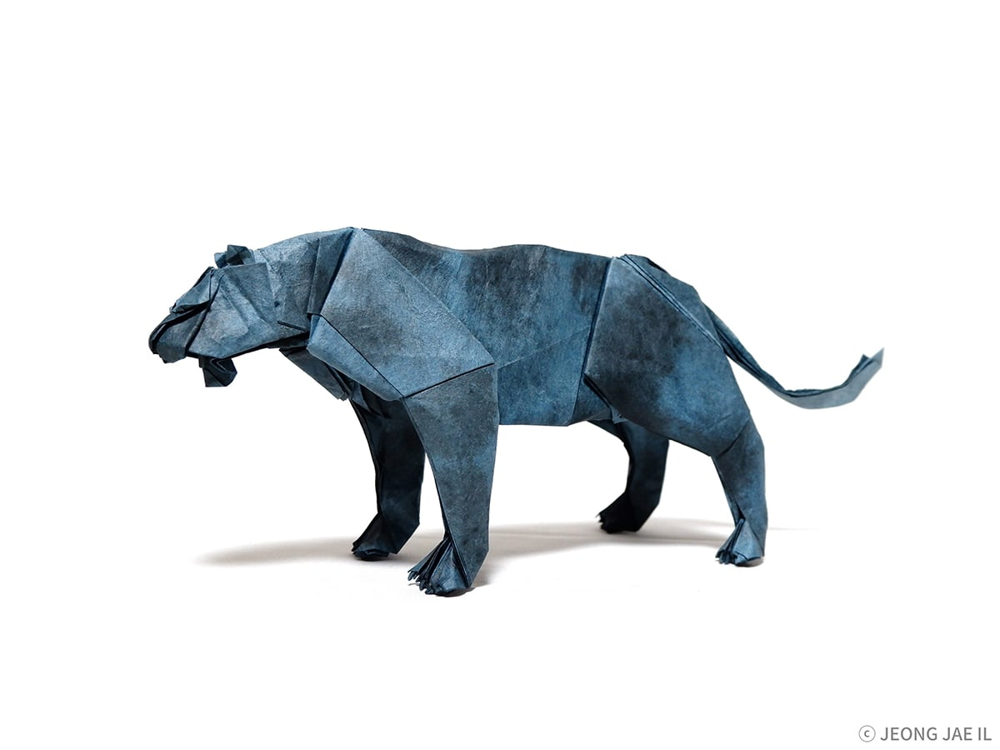

ORIGAMI ANIMALS!
ABOUT US! FOLLOW US:)

Some interesting facts about jaguar
-
jaguars are the 3rd biggest cat after lion and tigers!
-
At one time jaguars roamed all the way to the US-Mexico border, but jaguars are now only occasionally sighted in Texas and Arizona
-
The bite force of a jaguar is about 2,000 pounds per square inch
>
Some interesting facts about fox
-
They are members of the Canidae family.
-
Foxes are omnivorous animals.
-
The fennec fox is considered to be the smallest species of fox.
Some interesting facts about horse
-
Horses have around 205 bones in their skeleton
-
They also have a third eyelid which lies on the inside of the eye and closes diagonally over it for added protection.
-
Horses produce approximately 10 gallons of saliva a day.
Some interesting facts about penguins
-
Penguins evolved to fly underwater.
-
There are about 18 million macaroni penguins in the world. The Macaroni penguins have a lifespan of about 12 years.
-
While most penguin species can hold their breath for 2 to 3 minutes underwater, but, the large and mighty Emperor penguin can hold its breath for up to 20 minutes under water!